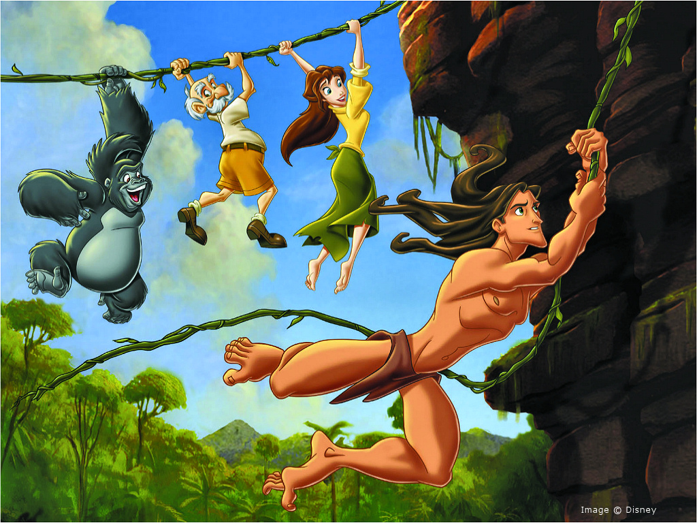

About Tarzan
Commonly known as the Ape Man, Tarzan was rescued and raised by a colony of apes after his parents were killed by the bloodthirsty Sabor. With help from his childhood friends Terk and Tantor, Tarzan would grow to become the valiant protector of the apes and the jungle at large- all the while never knowing the outside world.
Swinging on liana with his friends
Characteristics
- He's fearless and very confident in taking action
- He knows how to communicate with animals by mimics and and voice
- He's strong and healthy because of living with nature